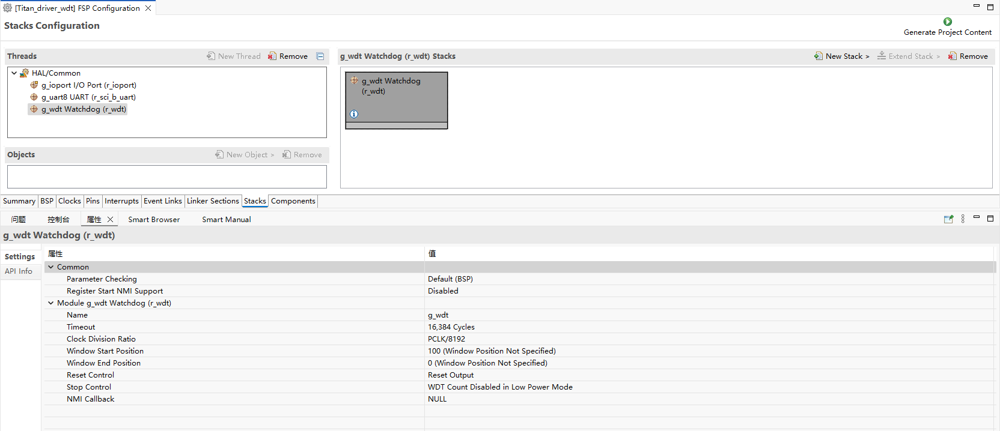
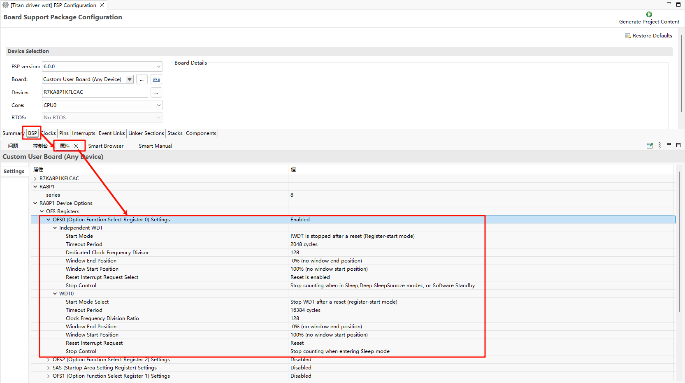
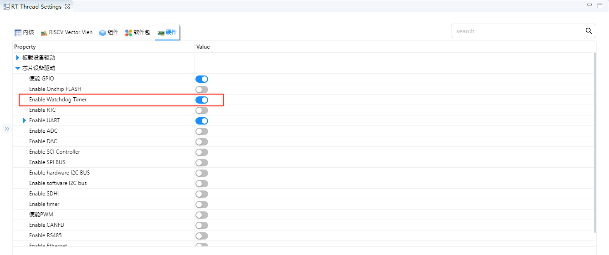
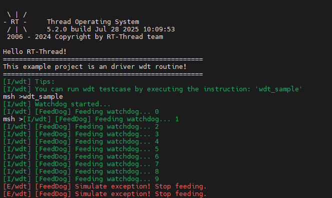

WDT 使用说明
中文 | English
简介
看门狗设备可以保证我们的代码在我们的预期中进行，可以有效防止我们的程序因为一些其它不可控因素导致代码”跑飞“。本示例展示了如何在 Titan Board 上使用 RA8 系列 MCU 的 WDT 模块，结合 RT-Thread 的 WDT 驱动框架 实现看门狗功能，包括定时器配置、喂狗操作及超时响应。
WDT（Watchdog Timer）简介
1. 概述
WDT（看门狗定时器） 是嵌入式系统中用于 监控系统运行状态、防止程序卡死或异常挂起的硬件定时器。
当 MCU 或处理器在规定时间内未对 WDT 进行复位（Kick/Reload）时，WDT 会 自动复位系统，确保系统能够恢复正常运行。
WDT 常用于：
防止软件死循环或任务卡死
提高系统可靠性和稳定性
工业控制、汽车电子、无人机、通信设备等关键应用
2. 工作原理
计数器模式
WDT 内部有一个递减计数器，从设定初值开始计数。
MCU 必须在计数器到达零前 清零计数器（Reload/Kick）。
如果计数器归零，触发 系统复位 或 中断。
喂狗机制
MCU 定期向 WDT 写入特定值，重置计数器
俗称 “喂狗”，保证系统正常运行时 WDT 不复位
复位/中断模式
复位模式：WDT 到期直接复位 MCU
中断模式：WDT 到期产生中断，可先尝试软件自我恢复
3. WDT 类型
类型 |
描述 |
|---|---|
独立看门狗（Independent WDT, IWDT） |
独立时钟源，系统重启或挂起时仍能运行 |
窗口看门狗（Window WDT） |
MCU 必须在规定窗口时间内喂狗，否则触发复位 |
超级看门狗（Super WDT） |
提供更高精度或可配置更长时间的保护 |
软看门狗（Software WDT） |
通过软件定时器实现，看门狗功能由操作系统或应用维护 |
4. 关键参数
计数器位数：决定 WDT 最大时间间隔
超时时间（Timeout）：从上次喂狗到 WDT 触发复位的时间
时钟源：独立低速晶振或系统时钟
复位方式：硬件复位或中断通知
示例：
MCU WDT 超时时间 500 ms
MCU 任务每 100 ms 喂狗一次
若任务卡死 500 ms 未喂狗 → WDT 自动复位系统
5. WDT 使用原则
定期喂狗：确保系统在正常运行时 WDT 不触发
关键任务喂狗：通常在主循环或关键任务中喂狗
中断安全：喂狗操作应避免被中断阻塞
合理超时设置：超时时间既要大于任务执行时间，又不能太长，防止死机长时间不被复位
RA8 系列 WDT 模块（r_wdt）简介
RA8 系列 MCU 内置高性能 WDT 模块（r_wdt），提供可靠的系统监控能力，可通过硬件复位或中断模式实现故障保护。
1. 基本特性
定时器模式：支持单次计时或周期计时
时钟源：独立低功耗时钟（LPO）或系统时钟
复位与中断输出：
超时可触发 MCU 系统复位
可选择中断模式，产生 WDT 中断供软件处理
计数范围：支持 8~32 位计数器，可灵活配置超时时间
安全性特性：
禁止误操作保护（有些寄存器需要解锁序列）
多级复位模式（WDT Reset, Non-maskable Reset）
独立操作：在 MCU 低功耗或睡眠模式下依然可运行
2. 模块架构
RA8 WDT 模块主要包含以下子模块：
计数器单元（Counter Unit）
基于时钟源递减计数
支持周期性溢出检测
控制寄存器（Control Register）
启动/停止 WDT
配置超时时间和中断/复位模式
配置喂狗序列
状态寄存器（Status Register）
反映 WDT 当前状态
超时标志
中断/复位触发标志
复位与中断控制单元
超时触发 MCU 复位
可选择中断模式通知 CPU
支持 NMI 或系统复位输出
3. 工作原理
启动 WDT：配置计数器、时钟源、超时时间后启动 WDT。
喂狗操作：软件周期性写入特定寄存器序列，重置计数器防止超时。
超时响应：
若未喂狗，计数器溢出触发超时
根据配置选择：
硬件复位 MCU
触发 WDT 中断供程序处理
安全保护：WDT 控制寄存器通常需解锁后才能修改，防止误操作。
RT-Thread WDT 框架简介
RT-Thread WDT（Watchdog Timer）框架 是 RT-Thread 设备驱动层提供的统一接口，用于管理各类 MCU 的硬件看门狗模块。该框架将硬件 WDT 功能抽象为标准设备接口，使应用层能够跨平台使用统一的 API 来实现系统自恢复机制。
1. 设备模型
在 RT-Thread 中，WDT 被作为 设备对象（struct rt_device 的子类，类型为 RT_Device_Class_WDT）进行管理，开发者无需关心底层硬件寄存器操作，只需调用标准接口即可完成看门狗功能。
2. 操作接口
应用程序通过 RT-Thread 提供的 I/O 设备管理接口来访问看门狗硬件，相关接口如下所示：
函数 |
描述 |
|---|---|
rt_device_find() |
根据看门狗设备设备名称查找设备获取设备句柄 |
rt_device_init() |
初始化看门狗设备 |
rt_device_control() |
控制看门狗设备 |
rt_device_close() |
关闭看门狗设备 |
3. 框架特点
设备抽象统一：所有硬件 WDT 通过相同的设备接口暴露给上层应用。
跨平台支持：应用程序可在不同 MCU 平台间移植而无需修改 WDT 相关代码。
超时保护：支持配置超时时间，系统未及时喂狗则触发中断或复位。
运行模式可选：支持 中断模式 和 复位模式，满足不同场景需求。
安全可靠：结合硬件 WDT 提供强制复位机制，防止系统异常卡死。
4. 使用流程
查找 wdt 设备
#define WDT_DEVICE_NAME "wdt" /* 看门狗设备名称 */
static rt_device_t wdg_dev; /* 看门狗设备句柄 */
/* 根据设备名称查找看门狗设备，获取设备句柄 */
wdg_dev = rt_device_find(WDT_DEVICE_NAME);
初始化看门狗
/* 初始化设备 */
rt_device_init(wdg_dev);
控制看门狗
命令控制字可取如下宏定义值：
#define RT_DEVICE_CTRL_WDT_GET_TIMEOUT (1) /* 获取溢出时间 */
#define RT_DEVICE_CTRL_WDT_SET_TIMEOUT (2) /* 设置溢出时间 */
#define RT_DEVICE_CTRL_WDT_GET_TIMELEFT (3) /* 获取剩余时间 */
#define RT_DEVICE_CTRL_WDT_KEEPALIVE (4) /* 喂狗 */
#define RT_DEVICE_CTRL_WDT_START (5) /* 启动看门狗 */
#define RT_DEVICE_CTRL_WDT_STOP (6) /* 停止看门狗 */
设置看门狗溢出时间使用示例如下所示：
#define WDT_DEVICE_NAME "wdt" /* 看门狗设备名称 */
rt_uint32_t timeout = 1; /* 溢出时间，单位：秒*/
static rt_device_t wdg_dev; /* 看门狗设备句柄 */
/* 根据设备名称查找看门狗设备，获取设备句柄 */
wdg_dev = rt_device_find(WDT_DEVICE_NAME);
/* 初始化设备 */
rt_device_init(wdg_dev);
/* 设置看门狗溢出时间 */
rt_device_control(wdg_dev, RT_DEVICE_CTRL_WDT_SET_TIMEOUT, &timeout);
/* 设置空闲线程回调函数 */
rt_thread_idle_sethook(idle_hook);
在空闲线程钩子函数里喂狗使用示例如下所示：
static void idle_hook(void)
{
/* 在空闲线程的回调函数里喂狗 */
rt_device_control(wdg_dev, RT_DEVICE_CTRL_WDT_KEEPALIVE, NULL);
}
关闭看门狗
rt_device_close(wdg_dev);
硬件说明
无
FSP 配置
打开 FSP 工具 新建 Stacks 选择 r_wdt：

注意：使用 WDT 需要使能 OFS0 寄存器配置。

RT-Thread Settings 配置
使能 WDT。

示例工程说明
示例程序位于 project/Titan_driver_wdt/src/hal_entry.c。
/*
* Copyright (c) 2006-2024, RT-Thread Development Team
*
* SPDX-License-Identifier: Apache-2.0
*
* Change Logs:
* Date Author Notes
* 2024-03-11 kurisaw first version
*/
#include <rtthread.h>
#include "hal_data.h"
#include <rtdevice.h>
#include <board.h>
#define DBG_TAG "wdt"
#define DBG_LVL DBG_LOG
#include <rtdbg.h>
#define WDT_DEVICE_NAME "wdt" // 默认看门狗设备名，视 BSP 而定
#define WDT_FEED_INTERVAL 1000 // 喂狗间隔（单位 ms）
#define WDT_TIMEOUT 3 // 看门狗超时时间（单位 s）
static rt_device_t wdt_dev = RT_NULL;
static rt_thread_t feed_thread = RT_NULL;
#define LED_PIN_0 BSP_IO_PORT_06_PIN_00 /* Onboard LED pins */
void hal_entry(void)
{
rt_kprintf("\nHello RT-Thread!\n");
rt_kprintf("==================================================\n");
rt_kprintf("This example project is an driver wdt routine!\n");
rt_kprintf("==================================================\n");
LOG_I("Tips:");
LOG_I("You can run wdt testcase by executing the instruction: \'wdt_sample\'");
while (1)
{
rt_pin_write(LED_PIN_0, PIN_HIGH);
rt_thread_mdelay(1000);
rt_pin_write(LED_PIN_0, PIN_LOW);
rt_thread_mdelay(1000);
}
}
static void feed_dog_entry(void *parameter)
{
int count = 0;
while (1)
{
if (count < 10)
{
rt_device_control(wdt_dev, RT_DEVICE_CTRL_WDT_KEEPALIVE, RT_NULL);
LOG_I("[FeedDog] Feeding watchdog... %d", count);
}
else
{
LOG_E("[FeedDog] Simulate exception! Stop feeding.");
}
count++;
rt_thread_mdelay(WDT_FEED_INTERVAL);
}
}
static int wdt_sample(void)
{
rt_err_t ret;
wdt_dev = rt_device_find(WDT_DEVICE_NAME);
if (wdt_dev == RT_NULL)
{
LOG_E("Cannot find %s device!", WDT_DEVICE_NAME);
return -1;
}
ret = rt_device_control(wdt_dev, RT_DEVICE_CTRL_WDT_START, RT_NULL);
if (ret != RT_EOK)
{
LOG_E("Start watchdog failed!");
return -1;
}
LOG_I("Watchdog started...", WDT_TIMEOUT);
feed_thread = rt_thread_create("feed_dog", feed_dog_entry, RT_NULL, 1024, 10, 10);
if (feed_thread != RT_NULL)
rt_thread_startup(feed_thread);
return 0;
}
MSH_CMD_EXPORT(wdt_sample, wdt_sample);
编译&下载
RT-Thread Studio：在 RT-Thread Studio 的包管理器中下载 Titan Board 资源包，然后创建新工程，执行编译。
编译完成后，将开发板的 USB-DBG 接口与 PC 机连接，然后将固件下载至开发板。
运行效果
在终端输入 wdt_sample 指令运行 WDT 测试程序，在喂狗 10 次后停止喂狗，模拟了程序异常情况。

引用参考
设备与驱动：WDT 设备